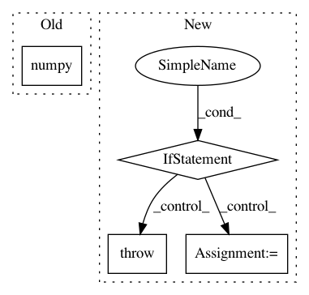

e06eee5deec11dc03d6c4975eb9a57f2bc6edd30,kornia/utils/image.py,,tensor_to_image,#Any#,32
Before Change
if len(input_shape) == 2:
tensor = torch.squeeze(tensor, dim=-1)
return tensor.cpu().detach().numpy()
After Change
input_shape = tensor.shape
if len(input_shape) == 2:
image: np.array = hw_tensor_to_hw_image(tensor)
elif len(input_shape) == 3:
image: np.array = chw_tensor_to_hwc_image(tensor)
elif len(input_shape) == 4:
image: np.array = bchw_tensor_to_bhwc_image(tensor)
else:
raise ValueError("Cannot process tensor with shape {}".format(input_shape))
return image
In pattern: SUPERPATTERN
Frequency: 4
Non-data size: 4
Instances
Project Name: arraiy/torchgeometry
Commit Name: e06eee5deec11dc03d6c4975eb9a57f2bc6edd30
Time: 2019-05-28
Author: jiangwei1993@gmail.com
File Name: kornia/utils/image.py
Class Name:
Method Name: tensor_to_image
Project Name: OpenNMT/OpenNMT-tf
Commit Name: d7db4b1b9a6c9577ca3a09c4241cdd9db58b31bc
Time: 2020-01-16
Author: guillaumekln@users.noreply.github.com
File Name: opennmt/training.py
Class Name: Trainer
Method Name: __call__
Project Name: Microsoft/nni
Commit Name: e6ef08f367e0389e811d63eaa5afb16183a19e2b
Time: 2020-08-24
Author: 40699903+liuzhe-lz@users.noreply.github.com
File Name: src/sdk/pynni/nni/compression/tensorflow/compressor.py
Class Name: PrunerLayerWrapper
Method Name: call
Project Name: IBM/adversarial-robustness-toolbox
Commit Name: c17c92d84ec9216b781ecfbc25c6df225e2fd4f1
Time: 2020-11-11
Author: M.N.Tran@ibm.com
File Name: art/defences/preprocessor/audio_filter_pytorch.py
Class Name: AudioFilterPyTorch
Method Name: __call__